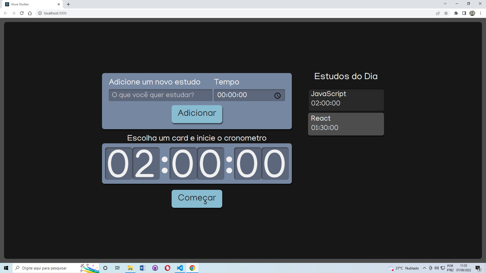

Alura Studies
Lista afazeres com cronômetro criado em React


Estudante de Engenharia de Software pela Universidade Estácio de Sá, profissional dedicado, curioso e apaixonado por aprender coisas novas, formado em Direito pela UNICAP, está em buscando uma recolocação profissional na área de tecnologia, sua verdadeira vocação.